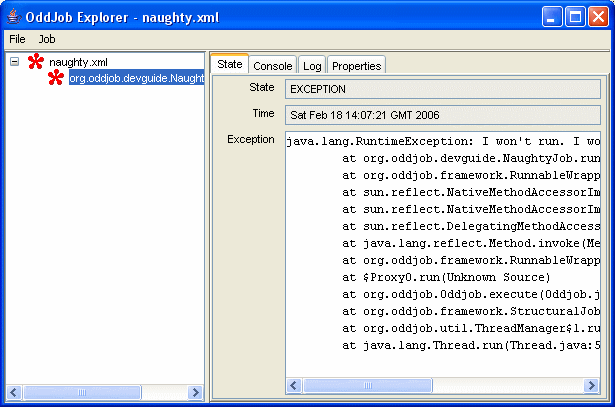
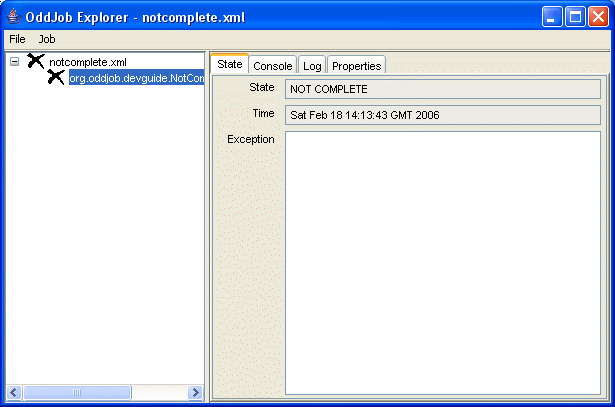

So far we've written a nice job that run's without errors - but what happens if something goes wrong?
Oddjob will catch all Throwables during job execution and set the job state to Exception. Let see with an example.
{@oddjob.java.file src/java/org/oddjob/devguide/NaughtyJob.java}And run it...
You can try resetting the job and re-running it however this job will not start behaving! The import thing is that it's naughtiness is contained.
Oddjob will also recognise the result property and use it to either set a job complete or not complete. If the result is 0 the job is state is complete, any other value and it's not complete.
{@oddjob.java.file src/java/org/oddjob/devguide/NotCompleteJob.java}And run it...
To stop a job Oddjob will interrupt the thread it's running. Long running jobs should be written to cope with this.
Here's an example.
{@oddjob.java.file src/java/org/oddjob/devguide/StoppingJob.java}Oddjob uses log4j. If
you also use Log4j, any logging in your job's run() method
will be captured by Oddjob and displayed in the log panel of Oddjob
Explorer.
Sometimes you don't want a job to run and complete, but to keep running in the background, probably providing some kind of service, such as Scheduling.
Oddjob will recognise the method signature of
public void start() and public void stop() and
treat that object as a service. When you run the job, the start
method will be called, but when it returns the state will still
be seen as executing. The service will be stopped when you
stop the job.
Here's an example.
{@oddjob.java.file src/java/org/oddjob/devguide/SimpleService.java}A service has the advantage that when used in a sequential job, jobs after the service will run once the service has started, and can then use that service for something.
If your job implements java.io.Serializable and Oddjob is
running with a persister then Oddjob will serialise the state of your
job when it completes. When Oddjob next runs, it re-creates the
job from the serialised form.
After your job is restored, Oddjob will continue to configure your job from the configuration file. Thus any serialised properties that appear in the configuration will be overwritten.